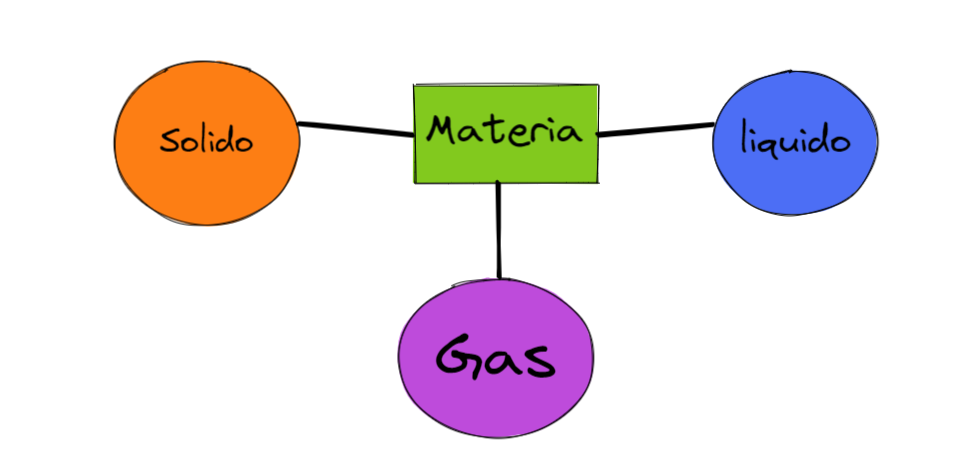

INF-535-001 DISEÑO Y PROGRAMACIÓN DE PAGINAS WEB
Creado por : Engel Noel B.N. | Matricula : 121-0067
Questionario De Química | Propiedades De La Materia
¿Qué es materia?
La materia es todo lo que ocupa un lugar en el espacio y tiene masa. Ej.: un lápiz, el agua, el aire, etc. Lavoisier comprobó que la materia ni se crea, ni se destruye, sólo se transforma. Ésta posee propiedades que pueden ser generales o específicas.
¿Qué son propiedades generales?
Propiedades generales: son aquellas que pertenecen a todo tipo de materia. Ej.: masa, peso, volumen, divisibilidad, impenetrabilidad.
¿Por qué a las propiedades generales se les llama extensivas?
Se les llama extensivas porque su valor depende de la cantidad de materia considerada.
¿Qué son propiedades específicas?
Propiedades específicas: son aquellas que diferencian una material de otra. Ej.: estado físico, punto de fusión punto de ebullición, densidad, olor, color, sabor, dureza, etc.
¿Por qué a las propiedades específicas se les llama intensivas?
Se les llama propiedades intensivas porque su valor no depende de la cantidad de materia considerada
¿Qué son propiedades físicas?
Propiedades físicas: son aquellas que se pueden medir y observar sin que cambie la composición de la materia. Ej.: Masa, color, punto de ebullición, etc.
¿Qué son propiedades químicas?
Propiedades químicas: son aquellas que para poder observarlas se debe efectuar un cambio químico. Ej.: combustión, putrefacción, oxidación, etc.
¿Qué es masa?
Masa: es la cantidad de materia que posee un cuerpo
¿Qué es peso?
Peso: Es la fuerza con que la tierra atrae los cuerpos hacia su centro.
¿Qué es volumen?
Volumen: es el espacio ocupado por un cuerpo.
¿Qué es densidad?
Densidad: es la relación que se establece entre la masa y el volumen de un cuerpo.
¿Qué es inercia?
Inercia: es la propiedad que tiene un cuerpo de mantener su estado de reposo o de movimiento a menos que una fuerza externa lo obligue a cambiar
¿Qué es divisibilidad?
Divisibilidad: es la propiedad que tiene la materia de fragmentarse ya sea macroscópica o microscópicamente
¿Qué es impenetrabilidad?
Impenetrabilidad: es la resistencia que ofrece un cuerpo a que otro ocupe su lugar.
¿Qué es elasticidad?
Elasticidad:la propiedad mecánica de ciertos materiales de sufrir deformaciones reversibles cuando se encuentran sujetos a la acción de fuerzas exteriores y de recuperar la forma original si estas fuerzas exteriores se eliminan.
¿Qué es Temperatura?
Temperatura: es la medida de la intensidad de calor, o lo caliente o frío que está en un sistema.
¿Qué es dureza?
Dureza: es la resistencia que ofrece un cuerpo a ser rayado.
¿Qué es punto de fusión?
Punto de fusión: es la temperatura a la que sólido pasa al estado líquido a la presión de una atmósfera.
¿Qué es punto de ebullición?
Punto de ebullición: es la temperatura a la que un líquido pasa al estado gaseoso a la presión de una atmósfera.
¿Qué es estado físico?
Estado físico: es la propiedad que tiene la materia de poder encontrarse de forma sólida, líquida o gaseosa.
¿Qué es maleabilidad?
Maleabilidad: es la propiedad que tiene la materia de deformarse formando láminas.
¿Qué es ductilidad?
Ductilidad: es la propiedad que tiene la materia de estirarse formando hilos.
¿Qué es la periodicidad?
Periodicidad: es una propiedad de los elementos químicos que indica que éstos pertenecen a un mismo grupo o familia de la tabla periódica manteniendo propiedades muy similares.
Descarga de Guia